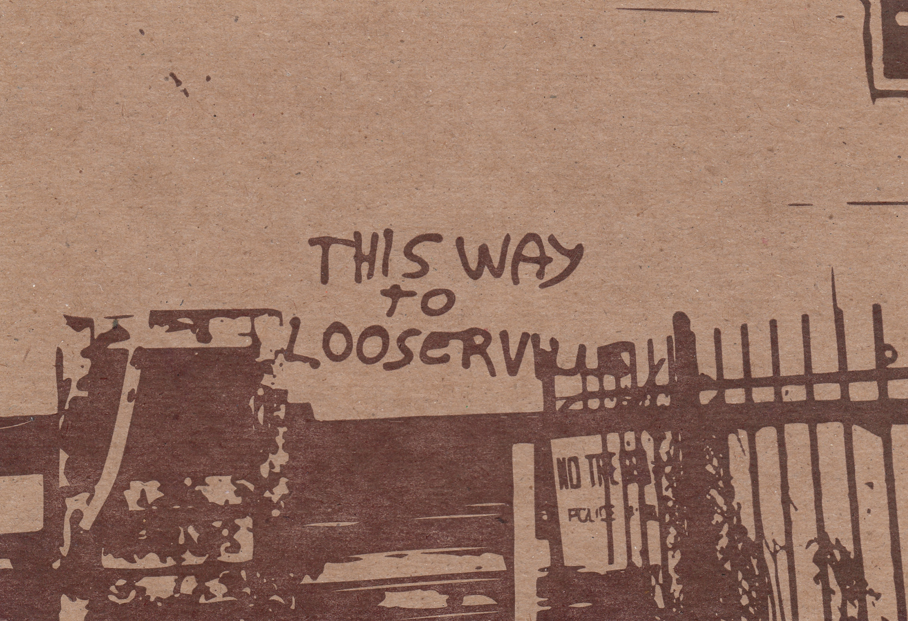
In 2012 I landed Mike Dacey a nice letterpress printing job with the timeless alt-yogurt company: SoDelicious. It was a nice project and I hooked it up and was duly owed a favor. I quickly determined that because of Mike's status in the local community - it was more valuable to have Mike owe me one than it was to actually cash in on it. I could bump into him anywhere across Camberville and proudly proclaim "This guy owes me a steak dinner!"
I never tired of it.
He got tired of it though and so to make even he printed me about 1000 of these postcards featuring a graphic based on some graffiti that was on the side of the old Fat City Cycles building (and immortalized on a film photo from antbikemike). One of my favorite pieces of art printed onto my favorite snail-mail medium. I love them so much and I've sent hundreds out over the years and I have safely secured hundreds others in mint condition and I'll be buried with at least a dozen of them. It's the best gift I ever got from a friend and I really owe him.
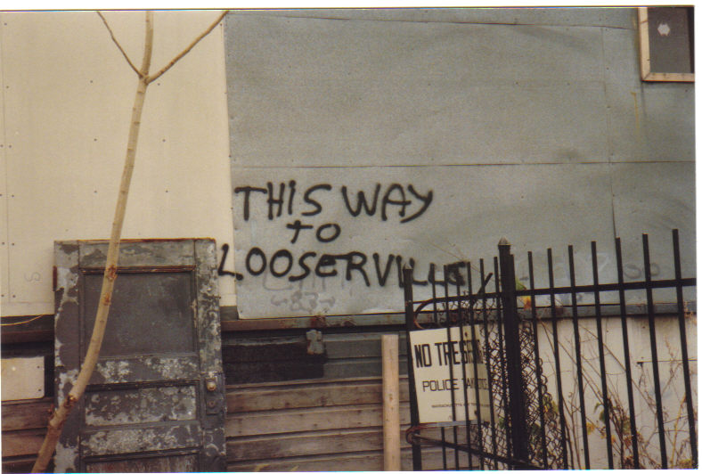
Photo from Mike Flanigan's Flickr
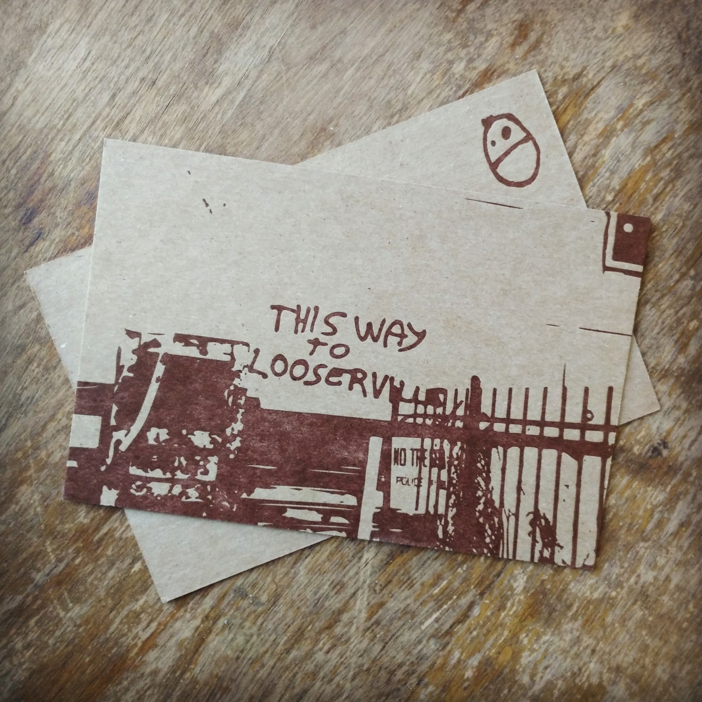
Some Fats I've owned and loved over the years:
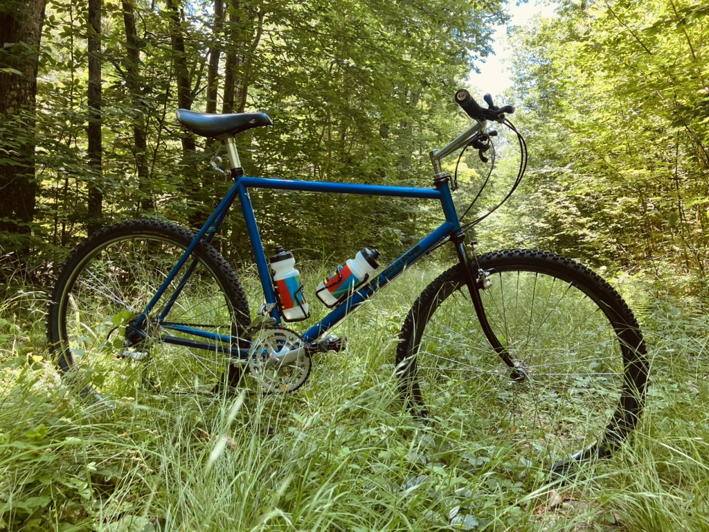
Fat Chance Kicker - Nothing fancy but it's my grocery getter at my place in NH
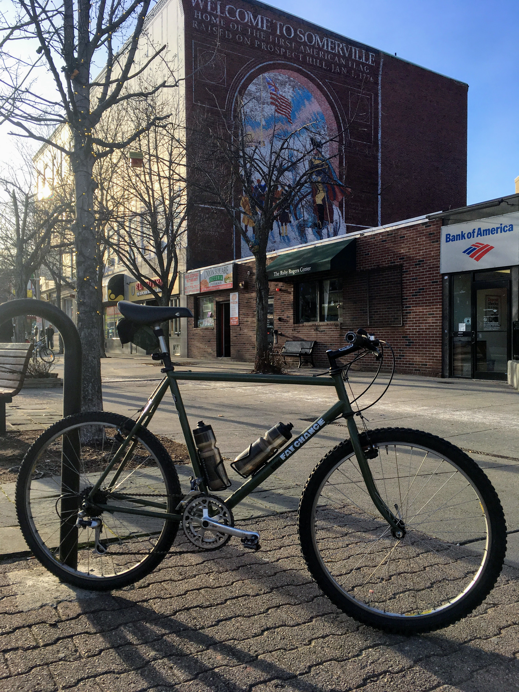
Wicked Fat Chance - Had this one for a while and it got me through some lean times but unfortunately I destroyed the frame trying to remove a seized seat post. You don't know what you got til it's gone
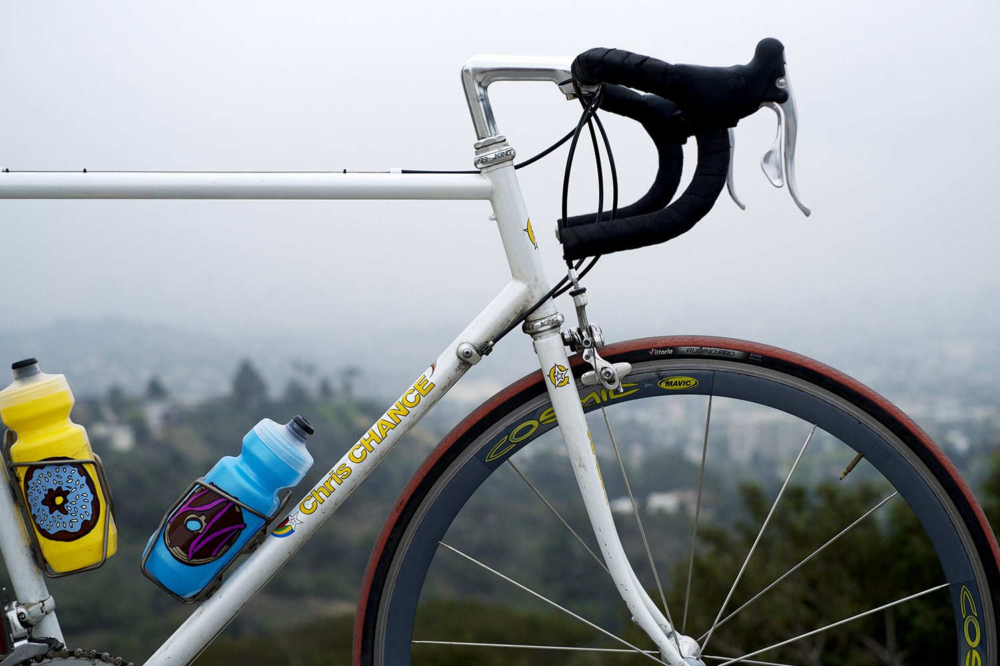
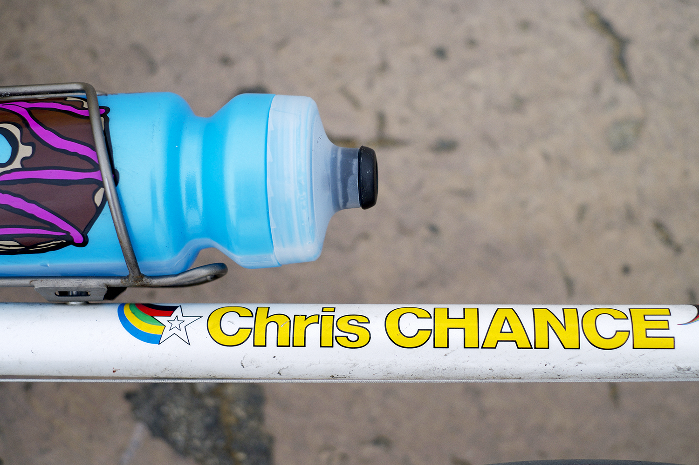
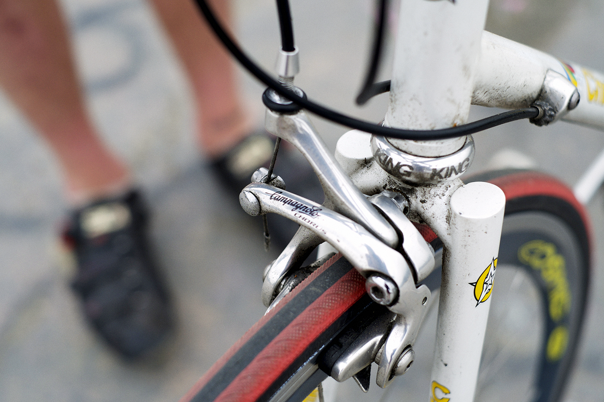
Chis Chance not a Slim Chance but a 1" TIG frame from NY. Not technically a Fat but we'll allow it
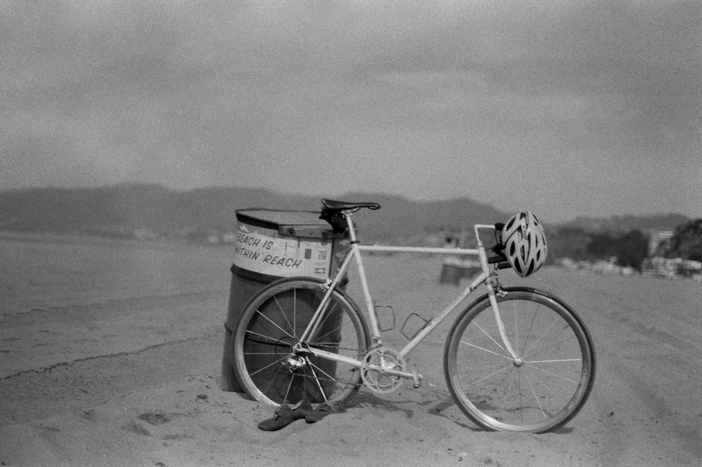
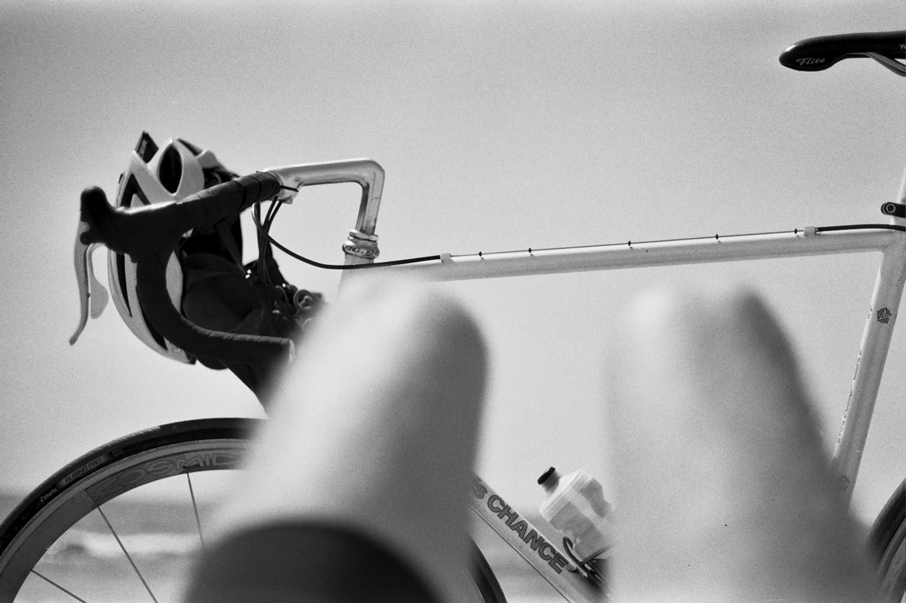
Venice Beach 2013
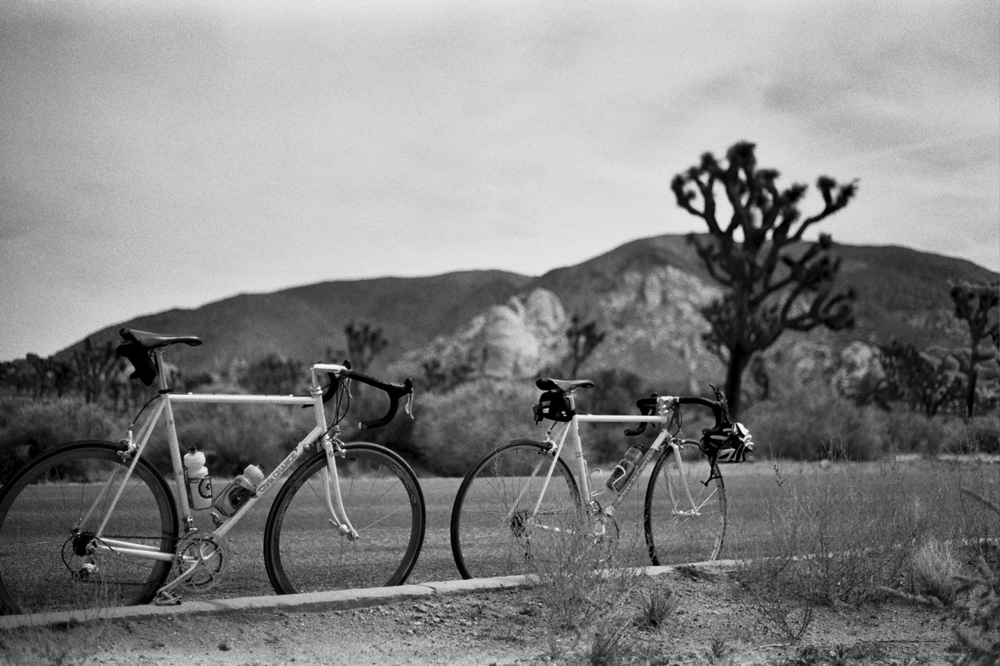